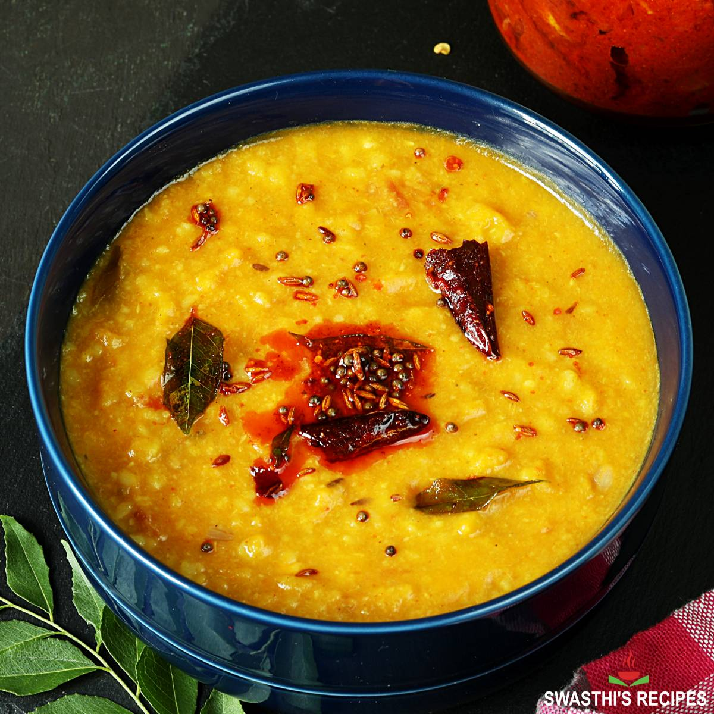

Mung Dhal

Description
The mung bean, alternatively known as the green gram, maash ٫ mūng, monggo, or munggo, is a plant species in the legume family. The mung bean is mainly cultivated in East, Southeast and South Asia. It is used as an ingredient in both savoury and sweet dishes. Wikipedia
Mung beans (Vigna radiata) are small, green beans that belong to the legume family.
They have been cultivated since ancient times. While native to India, mung beans later spread to China and various parts of Southeast Asia (1Trusted Source, 2).
These beans have a slightly sweet taste and are sold fresh, as sprouts or as dried beans. They aren’t as popular in the US but can be purchased from most health food stores.
Mung beans are incredibly versatile and typically eaten in salads, soups and stir-frys.
They’re high in nutrients and believed to aid many ailments (2).
Here are 10 health benefits of mung beans.
Ingredients
- 1/2 cup mung dhal
- 1/3 cup onions
- 1/2 cup tomatos
- 1 inch ginger
- 1/4 tsp chilli powder
- 1/3 tsp turmeric powder
- 1.5 cup water
- salt to taste
Steps
- Add Ghee, spices and let simmer for 2 mins
- Add water and all other ingredients
- Put lid on pressure cooker, and let simmer for 10 mins
- After, let it cool and enjoy